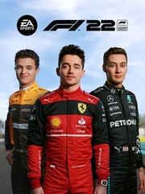

|  | |
| Tiempo de juego | No Jugado |
| Última actividad | Nunca |
| Añadido | 11/6/2024 14:41:31 |
| Modificado | 11/8/2024 17:34:06 |
| Estado de finalización | No Jugado |
| Librería | Playnite |
| Fuente | 6TB STORE |
| Plataforma | Microsoft Xbox One Microsoft Xbox Series PC (Windows) Sony PlayStation 4 Sony PlayStation 5 |
| Fecha de lanzamiento | 7/1/2022 |
| Puntuación de la Comunidad | |
| Puntuación de la Crítica | 81 |
| Puntuación de usuario | |
| Género | Racing |
| Desarrollador | Codemasters |
| Editor | EA Sports |
| Característica | Multiplayer Single-player |
| Enlaces | Wikipedia Official website at EA Official website at Codemasters |
| Tag | [Game Engine] EGO Engine 4.0 [People] composer: Brian Tyler [People] composer: Ethan Livingstone [People] composer: Ian Livingstone [People] composer: Miktek [People] composer: Rory Hay |
F1 22 is a racing video game developed by Codemasters and published by EA Sports. It is the fifteenth entry in the F1 series by Codemasters. The game holds an official licence of the 2022 Formula One and Formula 2 championships. The game was released for PlayStation 4, PlayStation 5, Windows, Xbox One, and Xbox Series X/S on 1 July. It would also make its debut on EA's Origin platform as their main platform, which is also playable in the EA Desktop app, as well as the Epic Games Store. In previous entries, Steam was the only platform available for PC players. The game was delisted in March 2024 following the announcement of the forthcoming F1 24.
The game received mostly positive reviews from critics, with most user criticism aimed at the lack of innovation compared to previous titles and the new "F1 Life" mode, as well as the revised in-game vehicle handling model which caused controversy over its new traction system, linked to the real-life regulation change Formula 1 saw for the 2022 season.
Due to new technical regulations for the 2022 Formula One World Championship, F1 22 features new car models with updated physics. The game also features an updated track list, including the revised layouts of Circuit de Barcelona-Catalunya for the Spanish Grand Prix, Yas Marina Circuit for the Abu Dhabi Grand Prix and Albert Park Circuit for the Australian Grand Prix, as well as adding the new Miami International Autodrome for the new Miami Grand Prix. The Algarve International Circuit, home of the Portuguese Grand Prix, along with the Shanghai International Circuit, hosting the Chinese Grand Prix, was subsequently added to the game with an update.
Formula One sprints, a new addition to the sport, are also included in the game. F1 22 features adaptive AI, which would adjust the pace of AI cars according to the performance of players to ensure players are competitive from race-to-race. The game also introduces a customisable hub mode called F1 Life to allow players to collect supercars, clothing and accessories. The game is also confirmed to support virtual reality for PC via Oculus Rift, or HTC Vive, virtual reality headsets. F1 22 also features immersive broadcast options, based on televised Formula One broadcasts, as well as interactive pit stops.
EA and Codemasters also added Supercars to Formula One with "Pirelli Hot Laps", which is accessible through the new "F1 Life" mode, as well as a licensed soundtrack in the main menu. Furthermore, an option to choose either David Croft from Sky Sports or Alex Jacques from Channel 4 as the main English commentator for F1 races is also added.
In a post-launch update, F1 22 features the 2023 Alfa Romeo C43.
F1 22 was revealed in April 2022, with both Codemasters and EA Sports returning to work on the game. It is an official video game of the 2022 Formula One and Formula 2 championships, alongside F1 Manager 2022 of Frontier Developments. The game was launched on 1 July, for PlayStation 4, PlayStation 5, Windows, Xbox One, and Xbox Series X/S platforms via Steam, Epic Games Store and Origin, which is on the weekend of the 2022 British Grand Prix. The Champions Edition of the game was released three days earlier, on 28 June.
F1 22 received "generally favorable" reviews, according to review aggregator Metacritic.
Eurogamer praised Codemasters' implementation of simulation elements such as dynamic weather and wrote in favor of their exclusion of porpoising but called the game "overly familiar" and "overly bloated", writing that "there's a feeling 2022's regulations have introduced as many problems as they have fixed, and that the positive impact of the new ruleset will not really be seen for some years to come". GameSpot praised the increased level of player agency, host of assist settings, and the authentic recreation of the new era of Formula One but criticized the lack of iteration, hollow F1 Life mode, and the inclusion of microtransactions. IGN liked the inclusion of the Formula One sprint race format, virtual reality support, and the game's rejuvenation of the franchise's stagnating elements but panned the "vapid" F1 Life mode's replacement of the predecessors' Braking Point mode and the game's monetization. PC Gamer praised the inclusion of real-world standings updates, sprint races, the skill tree system, damage models, and wealth of player choice but criticized the aging graphics, inconsistent AI, console controls, and lackluster addition of super cars, while noting that "the annual release has not felt this unnecessary since F1 2014".
PCGamesN found itself "dulled to [F1 22's] charms" and lamented the "cumulative fatigue of having been through this experience so many times before in previous iterations, and having so little meaningful new content in F1 22 to relieve it". Polygon stated that "F1 22 is not a transformative work, but it did not need to be one — creating new cars, and the organic challenge of learning how to drive them on the limit, was transformation enough". Push Square gave praise to the quality handling, good visuals, deep career modes, novel supercars, and robust customization while criticizing the numerous bugs, crashes, and screen tearing, as well as the aging game engine and insubstantial F1 Life mode. Shacknews lauded the overhauled racetracks, new circuits, remixed audio, new commentary, VR support, and the integration of new regulations and car designs but disliked the "terrible" feel of the supercars, difficult AI, and persistent series issues. The Guardian gave the game a score of 3/5 stars, praising the graphics and the ability to drive this year's cars on this year's tracks, but panned F1 Life as "egregious".
During the 26th Annual D.I.C.E. Awards, the Academy of Interactive Arts & Sciences nominated F1 22 for "Racing Game of the Year".
The game topped in the United Kingdom sales charts.